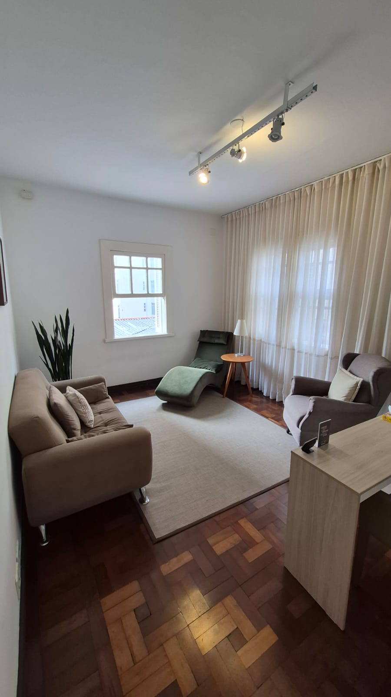
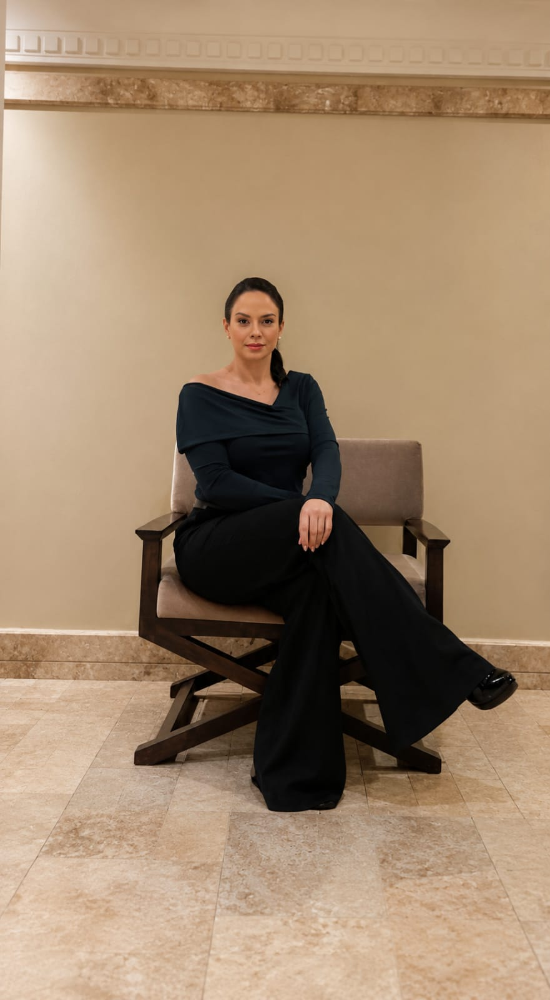

Ansiedade
Ajuda para lidar com pensamentos acelerados, tensão emocional e a sensação de estar sempre no limite. Vamos encontrar juntos formas de voltar ao presente.
Atendimento psicológico acolhedor em Curitiba e online. Uma pausa na sua semana para cuidar de você com alguém que escuta de verdade.
O consultório foi cuidadosamente preparado para transmitir acolhimento desde o primeiro momento. Iluminação suave, mobiliário confortável e uma atmosfera de silêncio e privacidade — tudo pensado para que você possa se abrir com tranquilidade.
Aqui, não há pressa. Cada sessão é o seu tempo, no seu ritmo, em um ambiente onde você é livre para ser exatamente quem é.

Um olhar atento para as suas necessidades, oferecendo ferramentas e espaço para lidar com o que mais te aflige.
Ajuda para lidar com pensamentos acelerados, tensão emocional e a sensação de estar sempre no limite. Vamos encontrar juntos formas de voltar ao presente.
Um espaço seguro e sem julgamentos para falar sobre sentimentos difíceis, angústias, perdas ou dificuldades nos relacionamentos.
Entender melhor seus padrões, suas escolhas e sua história. Descobrir por que você age de determinada maneira e como se libertar de amarras invisíveis.
Construção de uma vida mais equilibrada, autêntica e consciente, alinhada com o que realmente importa para você.

Sou a Arianne Costa. Ao longo de duas décadas de prática clínica, tenho acompanhado pessoas em seus momentos de maior vulnerabilidade e também em suas mais belas transformações.
Acredito em uma psicologia humana, ética e profundamente respeitosa com o tempo de cada um. Meu papel não é dar respostas prontas, mas iluminar o caminho para que você encontre as suas próprias.
Um consultório acolhedor, pensado para que você sinta conforto desde o momento em que entra. Um espaço reservado para a sua pausa semanal.
Para todo o Brasil e brasileiros no exterior. A mesma ética, profundidade e acolhimento do presencial, no conforto da sua casa ou onde você estiver.
Se você sente que é o momento de cuidar de si, entre em contato.
Agendar atendimento